📌 Chapter snapshot
- Chapter 8 of NCERT Curiosity, Science textbook for Grade 8 (reprint 2026-27): sections 8.1 to 8.5, 5 activities, Tables 8.1 to 8.3 and 12 end-of-chapter questions.
- The big idea in one line: Matter → Mixtures or Pure substances → Pure substances are Elements or Compounds.
- Most-asked in school exams (CBSE pattern): classify substances (element / compound / mixture), uniform vs non-uniform mixtures, the iron + sulfur activity, the electrolysis of water and gas tests, and the difference between a mixture and a compound.
- New words: mixture, components, uniform, non-uniform, alloy, pure substance, adulteration, element, atom, molecule, metal, non-metal, metalloid, compound, mineral, native mineral.
What is matter?
Look around you. The staircase, the air, the water in your bottle, your lunch, your clothes and shoes, this book, the trees, the football, even a stick: all of these are matter.
✅ Matter has mass, takes space
Water, air, stone, sugar, milk, iron nail, your body, a plant, smoke, dust, steam.
❌ Not matter no mass, no space
Light, heat, sound, electricity, shadows, thoughts, emotions, dreams, time.
🤔 Probe and ponder (page 116), answered
- Which things in the opening picture are matter? Students, trees, plants, football, bags, water bottle, books, stairs, the air, the soil and the building are matter. The sunlight, the warmth of the sun, the sound of children shouting and their happy feelings are not matter.
- How can elements combine to form a compound? Elements join chemically (through a chemical reaction, often with heat or electricity) in a fixed ratio. For example, iron and sulfur heated together form iron sulfide; hydrogen and oxygen combine to form water.
- How could a compound that absorbs carbon dioxide help the environment? Too much carbon dioxide in the air traps heat and causes global warming. A compound that soaks up CO2 from factory chimneys or from the air could lower the amount of this gas, slow down climate change and maybe even turn the trapped CO2 into useful products.
Most things around us are not made of just one substance. They are two or more substances mixed together. So we begin with mixtures.
What are mixtures?
Why is poha so tasty? Because it has flattened rice, onion, peanuts, curry leaves, turmeric, salt and lemon all together. A sprout salad has green gram, chickpeas, onion and tomato. Both are mixtures.
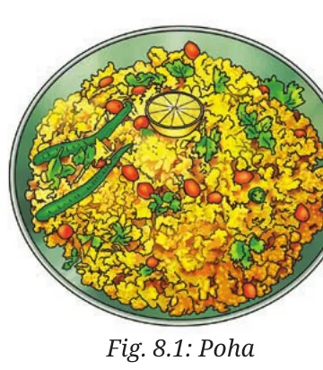
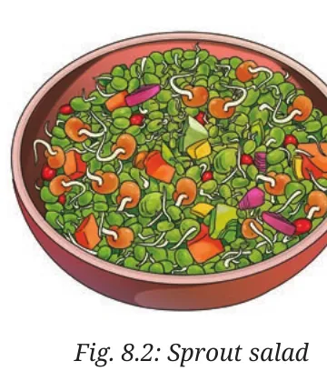
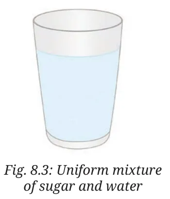
🧠 Kid-friendly way to remember
Think of a class photo. Every student stands together in one picture, but each one is still the same person with the same name. In a mixture, every component is "still itself". Sugar in water is still sweet; sand in water is still gritty.
Two kinds of mixtures
Non-uniform mixture
Uniform mixture
⚠️ Careful
"Uniform" does not mean "pure". Sugar water looks like plain water, but it is still a mixture of two substances. You can get the sugar back by evaporating the water.
A step further: alloys are mixtures of metals
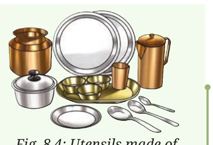
Your steel tiffin is a mixture! Stainless steel = iron + nickel + chromium + a little carbon, mixed so evenly that you cannot see the parts. Such uniform mixtures of metals (sometimes with a non-metal like carbon) are called alloys.
| Alloy | Made of | Where you see it |
|---|---|---|
| Stainless steel | Iron + chromium + nickel + a little carbon | Plates, spoons, tiffins, pressure cookers (does not rust) |
| Brass | Copper + zinc | Lota, diyas, door handles, musical instruments, Dhokra figures |
| Bronze (Kamsya) | Copper + tin | Bells, statues, medals, kansa thali |
🇮🇳 Our scientific heritage: Mishraloha
Ancient India called an alloy Mishraloha ("mixed metal"). Texts like the Charaka Samhita, Susruta Samhita, Rasaratna Samucchaya and Rasa Jala Nidhi describe alloys used in medicine. Kamsya (bronze) was made of 4 parts copper (Tamra) and 1 part tin (Vanga) and was used to improve digestion and boost immunity.
Is air a mixture?
Yes! Air is a uniform mixture of gases, mainly nitrogen, oxygen, argon, carbon dioxide and water vapour. We cannot see them separately, and each gas keeps its own properties.
🌬️ What is in 100 litres of dry air?
Plus a changing amount of water vapour, and sometimes dust and smoke (pollutants).
- Oxygen is needed by most living beings to breathe, and it helps things burn (supports combustion).
- Nitrogen (about 78%) does not take part in burning.
- Water vapour: when warm air touches a cold glass, tiny drops form outside it. That water came from the air.
- Carbon dioxide: proved by Activity 8.1 below.
Activity 8.1: Lime water proves CO2 is in air
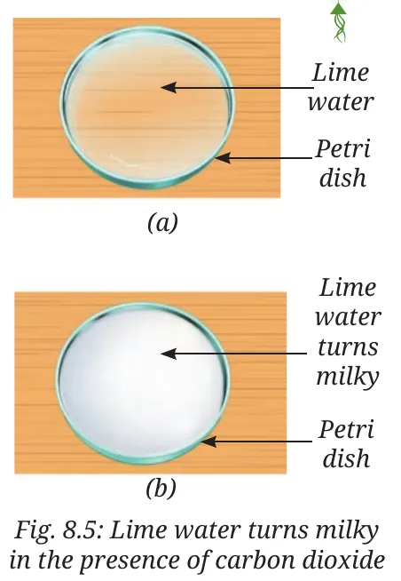
- Half-fill a glass with water and slowly add a little calcium oxide (quick lime). It reacts vigorously and becomes hot, forming calcium hydroxide. (Safety: do this carefully.)
- Stir, then filter. The clear, colourless solution is lime water.
- Leave it in a petri dish for a few hours, stirring now and then.
- It turns milky! Carbon dioxide from the air reacts with it to form tiny white insoluble particles of calcium carbonate.
Calcium hydroxide + Carbon dioxide → Calcium carbonate (white, milky) + Water
Activity 8.2: Dust in the air
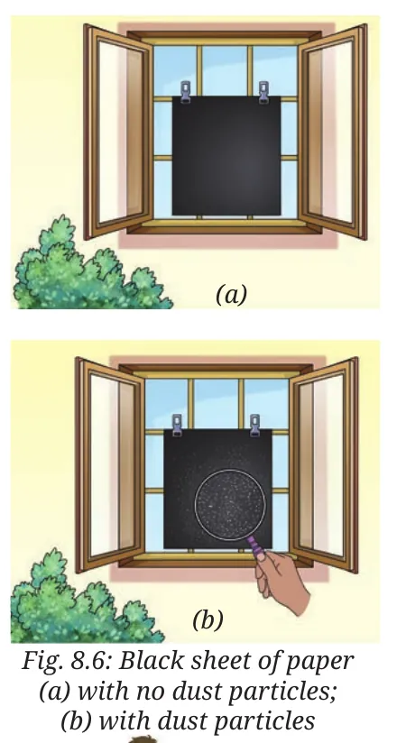
Keep a clean black sheet of paper near an open window for a few hours. Tiny particles settle on it. A magnifying glass shows them clearly. You also see such shining particles dancing in a sunbeam in a dark room.
These dust particles are suspended in air, but they are not a real part of air. They are pollutants. Their amount changes from place to place and time to time (more near a busy road, less after rain).
A step further: Air Quality Index (AQI)
Major air pollutants: particulate matter (dust, soot) and gases like carbon monoxide, ozone, nitrogen dioxide and sulfur dioxide. The AQI is a number that tells how clean or polluted the air is. Lower AQI = cleaner air.
Types of mixtures
In daily life, "mixture" can mean mixing anything, even things that are themselves mixtures (poha, salad). In science, every component of a mixture must be a pure substance (like sugar, salt, water). Mixtures are grouped by the states of their components.
Table 8.1 completed: different types of mixtures
| # | Mixture type | Example | Uniform or non-uniform | Why |
|---|---|---|---|---|
| 1 | Gas + gas | Air | Uniform | Gases spread evenly |
| 2 | Gas + liquid | Aerated (soda) water | Uniform | CO2 dissolved under pressure, not seen |
| Oxygen dissolved in water | Uniform | Dissolved oxygen is invisible (fish use it) | ||
| 3 | Solid + gas | Carbon particles in air (smoke) | Non-uniform | Soot particles can be seen |
| 4 | Liquid + liquid | Acetic acid in water (vinegar) | Uniform | They mix completely |
| Oil and water | Non-uniform | Oil floats as a separate layer | ||
| 5 | Solid + liquid | Sand and water | Non-uniform | Sand settles, can be seen |
| Seawater | Uniform | Salts are dissolved (ignore floating dirt) | ||
| 6 | Solid + solid | Baking powder (baking soda + tartaric acid) | Non-uniform | Two powders, grains can be told apart under a magnifier |
| Alloys | Uniform | Metals mixed evenly in molten state |
Why do scientists separate mixtures?
At home we separate to keep the useful part and throw the rest (pick stones from dal, strain tea leaves). In science, we separate a mixture to get pure substances. Recall methods from earlier classes: handpicking, sieving, winnowing, sedimentation and decantation, filtration, evaporation, using a magnet, separating funnel.
What are pure substances?
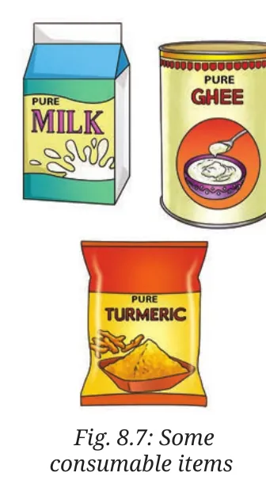
Packets of milk, ghee and turmeric say "PURE". But "pure" means two different things:
In daily life shopkeeper's meaning
Pure = not adulterated, nothing cheap or harmful added.
In science scientist's meaning
Pure = made of only one kind of particle, no other substance in it.
Adulteration is the illegal practice of adding cheaper or poor-quality substances to a product to increase quantity or lower cost. Examples: water in milk, brick powder in chilli powder, papaya seeds in black pepper, metanil yellow in turmeric. It lowers quality and can harm health.
So is "pure milk" pure? No!
To a scientist, unadulterated milk is still a mixture (water, fat, proteins, sugar called lactose, minerals). Same for ghee, honey and fruit juice.
A step further (page 121), answered: mixture or pure substance?
| Substance | Science says | Reason |
|---|---|---|
| Milk | Mixture | Water + fat + protein + lactose + minerals |
| Packed fruit juice | Mixture | Water + sugar + fruit pulp + acids + preservatives |
| Baking soda | Pure substance (compound) | Only sodium hydrogen carbonate particles |
| Sugar | Pure substance (compound) | Only sucrose particles (C, H, O joined) |
| Soil | Mixture | Sand, clay, humus, minerals, water, air |
Types of pure substances: breaking water
Water → ice on cooling, water → vapour on boiling, and back again. The particles of water stay the same in these changes (physical changes). But what happens if we pass electricity through water?
Activity 8.3: Passing electricity through water (teacher demonstration)
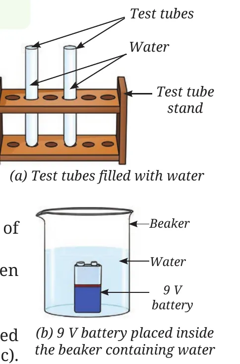
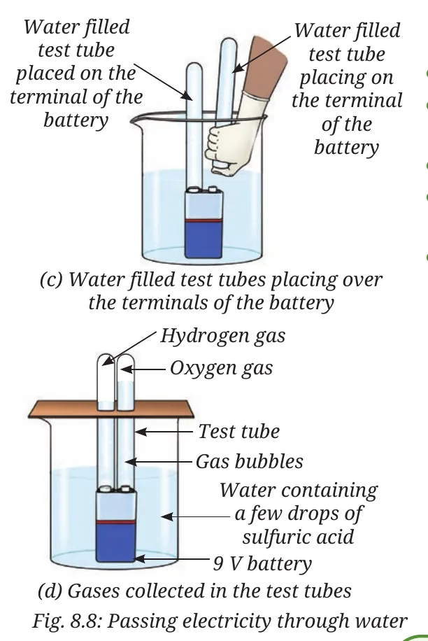
- Fill a beaker 2/3 with water and add a few drops of dilute sulfuric acid (pure water conducts electricity poorly; the acid helps).
- Fill two small test tubes completely with this water.
- Place a 9 V battery in the beaker and carefully turn the water-filled test tubes upside down over each terminal.
- Gas bubbles rise at both terminals and push water out of the tubes. Wait 10 to 15 minutes.
- One tube collects about double the volume of gas compared to the other.
- Test each gas with a burning candle.
⚠️ Safety first
Only under a teacher's supervision. Handle sulfuric acid carefully. Never use a lithium-ion battery. Keep a safe distance while testing gases.
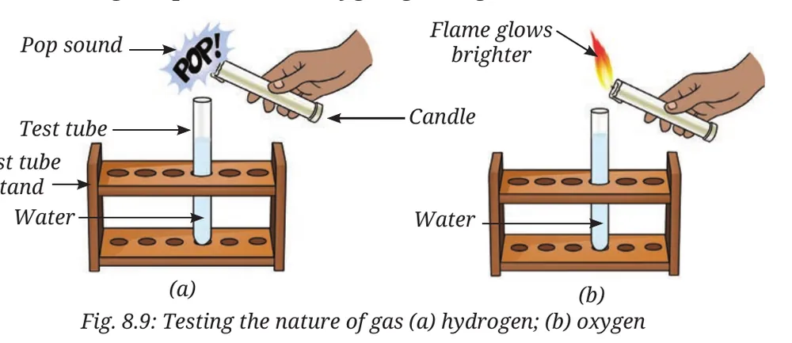
| Tube | Volume of gas | Candle test | Gas |
|---|---|---|---|
| At negative terminal | Double (2 parts) | Burns with a pop sound | Hydrogen |
| At positive terminal | Half (1 part) | Candle flame glows brighter | Oxygen |
Can these gases be water vapour?
No. Water vapour would cool and condense back into water. These gases stay as gases and behave totally differently. So water has broken down into two new substances.
Ever heard of… Physical or chemical change?
Breaking water into hydrogen and oxygen is a chemical change: new substances with new properties are formed, and you cannot get water back just by cooling them. (Melting ice is only a physical change.)
Elements
Hydrogen and oxygen from Activity 8.3 are pure substances that cannot be broken down any further into simpler substances. They are elements.
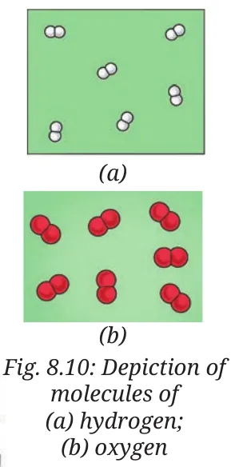
Each element is made of identical tiny particles called atoms. Atoms of one element are different from atoms of every other element.
A step further: atoms of most elements cannot live alone. Two or more join to form a stable particle called a molecule. Two hydrogen atoms make one hydrogen molecule (H2); two oxygen atoms make one oxygen molecule (O2).
Atom = one Lego brick. Molecule = two or more bricks snapped together. Element molecule = bricks of the same colour; compound molecule = bricks of different colours.
Metals, non-metals and metalloids
🔩 Metals
Shiny, hard, can be beaten into sheets, conduct heat and electricity, make a ringing sound. Gold, silver, iron, copper, aluminium, magnesium, mercury.
🌫️ Non-metals
Usually dull, brittle if solid, poor conductors. Carbon, sulfur, hydrogen, oxygen, nitrogen, chlorine, bromine.
⚖️ Metalloids
In between metals and non-metals. Silicon, boron. (More in higher classes.) Silicon is used in computer chips.
🤯 Amazing element facts (A step further)
- 118 elements are known today. Most are solids.
- 11 elements are gases at room temperature, all non-metals: hydrogen, helium, nitrogen, oxygen, fluorine, neon, chlorine, argon, krypton, xenon, radon.
- Only 2 elements are liquids at room temperature: mercury (a metal) and bromine (a non-metal).
- Gallium and caesium are solids that melt at about 30 °C (303 K). Gallium can melt in your palm!
- Your mobile phone uses more than 45 elements: aluminium, copper, silicon, cobalt, lithium, gold, silver and more.
Compounds
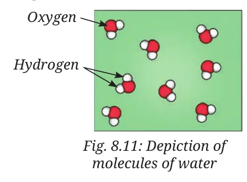
Why can't we pull hydrogen and oxygen out of water by filtering, boiling or using a magnet? Because in water the hydrogen and oxygen particles are tightly joined (chemically bonded). Water is a compound.
🔥💧 Oh! This is really fascinating
Hydrogen is a fuel (burns). Oxygen helps burning. But water, made from both, puts out fire! A compound has brand-new properties.
| Compound | Elements in it | Fixed ratio of atoms | Elements vs compound |
|---|---|---|---|
| Water | Hydrogen + oxygen | H : O = 2 : 1 | Two gases that burn / help burning → a liquid that puts out fire |
| Sodium chloride (common salt) | Sodium + chlorine | Na : Cl = 1 : 1 | A soft metal that reacts violently with water + a poisonous yellow-green gas → harmless, tasty salt we eat daily |
| Sugar | Carbon + hydrogen + oxygen | Fixed (C12H22O11, for higher classes) | Black solid + two gases → white, sweet crystals |
| Iron sulfide | Iron + sulfur | Fe : S = 1 : 1 | Magnetic grey metal + yellow powder → black, non-magnetic solid |
| Carbon dioxide | Carbon + oxygen | C : O = 1 : 2 | Black solid + gas that helps burning → gas that puts out fire |
Salt: separate it from water? Yes. Break it into sodium and chlorine by a physical process? No.
We can get salt back from salt water by evaporation (salt water is a mixture). But salt itself is a compound; boiling, filtering or a magnet can never give sodium and chlorine. That needs a chemical process (passing electricity through molten salt).
Activity 8.4: Is sugar an element or a compound?
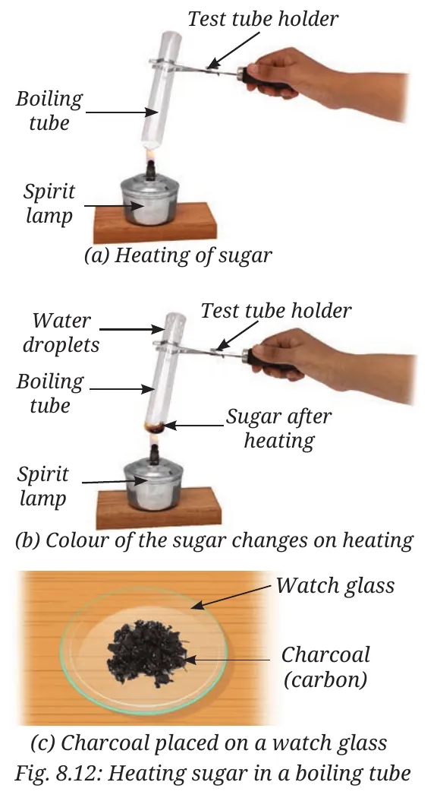
- Heat a teaspoon of sugar gently in a boiling tube (only with a teacher).
- It melts and turns brown (caramel), then black (it chars).
- Water droplets appear near the cool mouth of the tube. They came from the sugar, not from the air, because the tube is hot.
- A black solid, charcoal (carbon), is left. Scoop it out: it burns like coal.
- Conclusion: sugar broke into carbon + water, and water = hydrogen + oxygen. So sugar is not an element; it is a compound of carbon, hydrogen and oxygen.
Iron + sulfur: mixture or compound?
The star activity of this chapter. The same two elements can form a mixture (Sample A) or a compound (Sample B). Watch how differently they behave. Try it yourself in the Iron-Sulfur Lab.
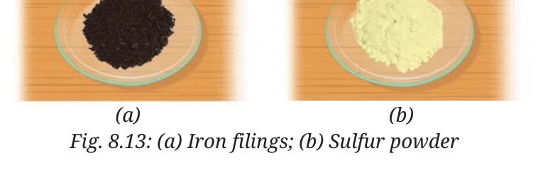
- Take 5.6 g iron filings and 3.2 g sulfur powder and mix them on a watch glass. This is Sample A. You can still see grey iron and yellow sulfur: a non-uniform mixture.
- Heat half of Sample A in a china dish on a wire gauze with stirring until it glows and becomes a black mass. Cool, grind with mortar and pestle. This is Sample B.
- Compare A and B: appearance, magnet test, and gas test with dilute hydrochloric acid.
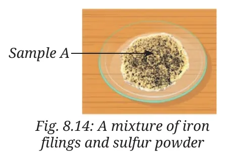
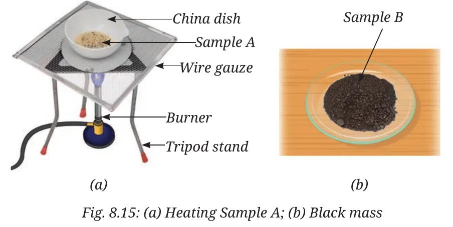
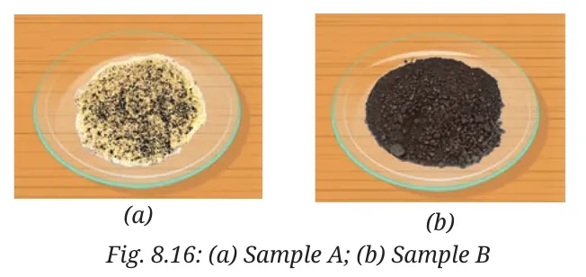
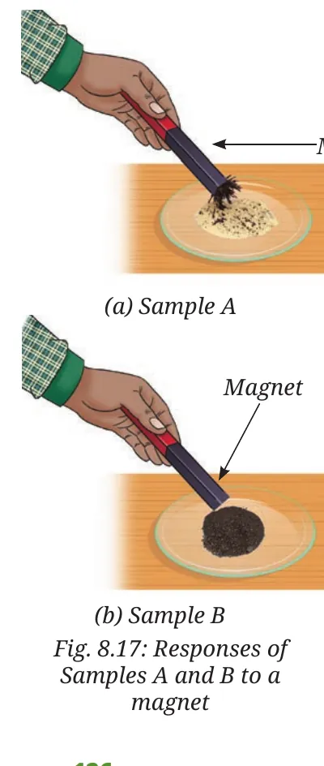
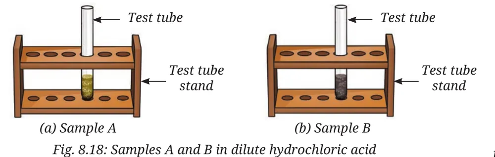
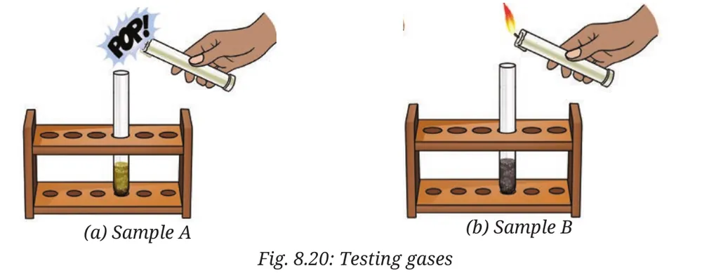
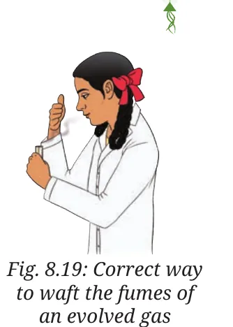
⚠️ Safety first
- Never smell anything directly. Wave (waft) the gas towards your nose with your hand.
- Do it in a fume hood or well-ventilated place, and do not breathe in the gases.
- Be careful with dilute hydrochloric acid.
Table 8.2 completed: comparison of Samples A and B
| Experiment | Sample A (mixture) | Sample B (compound) |
|---|---|---|
| Colour | Grey-black and yellow particles seen separately | Black, same throughout |
| Texture | Not the same throughout (non-uniform) | Same throughout (uniform) |
| Magnet test | Iron filings stick to the magnet; sulfur is left behind | Not attracted by the magnet |
| Gas with dil. HCl: odour | Gas has no smell | Gas smells of rotten eggs |
| Gas: burning | Burns with a pop sound (hydrogen) | No pop sound (hydrogen sulfide) |
| What is left | Yellow sulfur stays at the bottom (it does not react with the acid) | Nothing yellow; all of it reacts |
| Conclusion | Mixture of two elements | Compound: iron sulfide |
Sample A: Iron + Dilute hydrochloric acid → Iron chloride + Hydrogen gas (colourless, no smell, burns with a pop)
Sample B: Iron sulfide + Dilute hydrochloric acid → Iron chloride + Hydrogen sulfide (colourless, rotten-egg smell)
Discussion points, answered
- Do A and B look the same? No. A is speckled grey and yellow; B is uniformly black.
- Which one is magnetic? Only A, because it contains free iron.
- Can we separate the components? A, yes (magnet). B, no physical method works.
- Do gases form in both with dilute HCl? Yes, but different gases.
- Same smell? No. A gives odourless hydrogen; B gives hydrogen sulfide with a rotten-egg smell.
- Categorise: Elements: iron, sulfur, hydrogen. Compounds: iron sulfide, hydrochloric acid (hydrogen chloride), iron chloride, hydrogen sulfide. Mixtures: Sample A, dilute hydrochloric acid (hydrogen chloride in water).
- Why does the magnet not affect B? In iron sulfide, iron is chemically joined to sulfur; it is no longer free iron, and the new compound has its own properties (not magnetic).
🧮 Fixed ratio, in numbers
5.6 g iron + 3.2 g sulfur = 8.8 g iron sulfide. Iron and sulfur always combine in the mass ratio 7 : 4 (5.6 : 3.2). If you took 10 g sulfur with 5.6 g iron, only 3.2 g would react and 6.8 g would be left over. A mixture can have any ratio; a compound always has a fixed ratio.
Mixture vs compound
This table is the most important one for exams. Learn it point by point.
| Point | Mixture | Compound |
|---|---|---|
| 1. Formation | Components just mixed, no chemical change | Elements combine by a chemical change (reaction) |
| 2. Ratio | Components in any ratio | Elements in a fixed ratio |
| 3. Properties | Each component keeps its own properties | Properties are completely different from its elements |
| 4. Separation | By physical methods (magnet, filtration, evaporation) | Only by chemical methods |
| 5. Nature | Uniform or non-uniform | Always uniform, a pure substance |
| 6. Energy | Usually no heat or light given out or taken in | Heat/light/electricity usually given out or needed |
| 7. Example | Iron + sulfur (Sample A), air, salt water | Iron sulfide (Sample B), water, salt, sugar |
| Point | Element | Compound |
|---|---|---|
| Particles | One kind of atom only | Two or more kinds of atoms joined |
| Can it be broken down? | No, not even chemically | Yes, by chemical methods |
| Examples | Hydrogen, oxygen, iron, gold, carbon | Water, salt, sugar, CO2, rust |
How do we use elements, compounds and mixtures?
Elements
Iron and aluminium for bridges, buildings, vehicles. Copper for wires. Gold and silver for jewellery. Oxygen for breathing in hospitals.
Compounds
Water for life. Salt for food. Medicines and vaccines made by chemists. Fertilisers (like urea) to grow more food for a growing population.
Mixtures
Air we breathe. Alloys like stainless steel (stronger and longer-lasting than pure iron). Wood, steel and concrete for building.
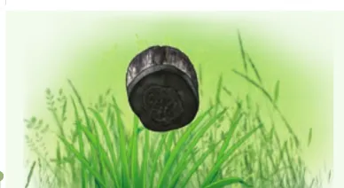
A wonder material: graphene aerogel
Made of carbon, said to be the lightest material on Earth: so light that grass can hold it up. It is full of tiny holes (highly porous), so it can soak up a lot. It could clean oil spills at sea and on land, and is useful in energy-saving devices and special building coatings.
What are minerals?
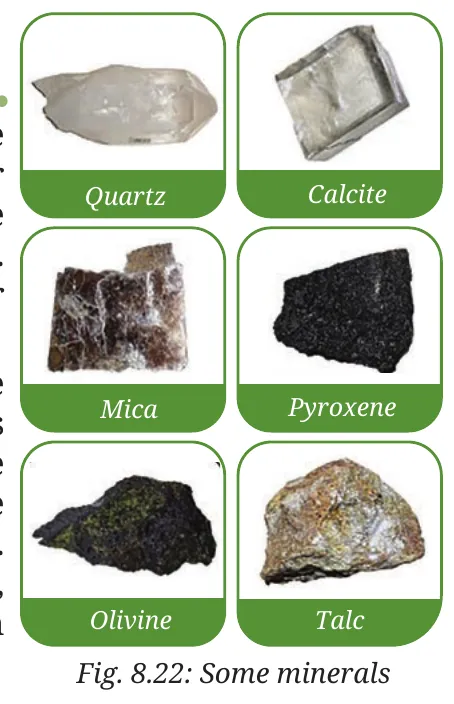
Most rocks are mixtures of minerals. You can see the minerals with your eyes, a magnifying glass or a microscope.
- Native minerals are pure elements found in nature: metals like gold, silver, copper, and non-metals like sulfur, carbon (diamond, graphite).
- Most minerals are compounds: quartz, calcite, mica, pyroxene, olivine, talc.
| Mineral / material | Used for |
|---|---|
| Calcite, quartz, alumina, iron oxide | Cement is made from these |
| Talc | Talcum powder |
| Quartz | Glass, watches |
| Mica | Electrical insulation, shiny paints and cosmetics |
Our scientific heritage: Dhokra art
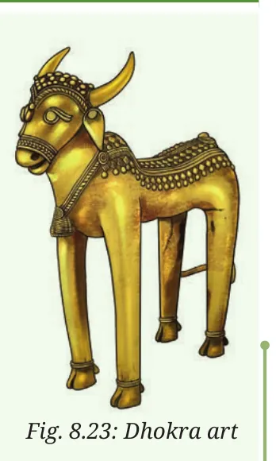
An old craft from Bihar and Odisha (our own state!). Steps (the "lost-wax" method):
- Make a design in beeswax
- Cover the wax model with clay to make a mould
- Heat: the wax melts out, leaving a hollow
- Pour in molten brass or bronze (alloys = mixtures)
- Break the clay: a shiny golden figure!
What is not matter?
Elements and compounds are the building blocks of matter. But light, heat, electricity, thoughts and emotions are important parts of our world that are not matter: they have no mass and take no space.
Virtual labs
Do the chapter's experiments on your phone, safely. Tap, slide and watch what the particles do.
🔬 Lab 1: Particle Viewer
Pick a substance and zoom in to see its particles. Same-colour balls = one kind of atom.
⚡ Lab 2: Electrolysis of water (Activity 8.3)
Switch on the 9 V battery and slide the time. Then test each tube with a burning candle.
🧲 Lab 3: Iron-Sulfur Lab (Activity 8.5)
Make Sample A, then Sample B, and run every test. The table fills in as you observe.
| Test | Sample A | Sample B |
|---|---|---|
| Appearance | ? | ? |
| Magnet | ? | ? |
| With dil. HCl | ? | ? |
| Odour of gas | ? | ? |
| Candle test | ? | ? |
🥤 Lab 4: Mixture Mixer
Add something to a glass of water and stir. Is the mixture uniform or non-uniform? How would you separate it?
Mind map, snapshots and traps
📸 Snapshots (chapter summary)
- A mixture has two or more substances mixed together; they keep their own properties and do not react chemically.
- The substances that make up a mixture are its components.
- A pure substance has the same type of particles, which all behave identically.
- A pure substance is either an element or a compound.
- Elements are the simplest substances and cannot be broken down further. They are the building blocks of all matter.
- Compounds are two or more elements combined chemically in a fixed ratio, with properties different from their elements.
- Minerals are natural solids in the Earth with a fixed chemical composition; mostly compounds, rarely pure elements.
🚫 Common mistakes
"Air is a compound." Wrong
Air is a mixture: its gases are in varying amounts and each keeps its own properties.
"Water is a mixture of hydrogen and oxygen." Wrong
Water is a compound: H and O are chemically joined in a fixed 2 : 1 ratio and water has different properties.
"Brass is a compound." Wrong
Alloys are uniform mixtures; their proportions can vary.
"Uniform means pure." Wrong
Salt water, air and steel are uniform but are mixtures.
"Salt water is a compound because it looks the same." Wrong
Evaporation gives back the salt: it is a mixture. Salt itself is a compound.
Mixing up the gas tests Trap
Hydrogen: pop sound. Oxygen: flame glows brighter. CO2: lime water turns milky. H2S: rotten-egg smell.
"Light and heat are matter." Wrong
They have no mass and take no space; they are forms of energy.
Matter Arcade: 7 games
Play to learn. Every game gives you ⭐ stars, saved on this phone. Collect all 35 to become a Matter Master.
🗂️ Game 1: Sort-o-matic
Element, compound or mixture? 12 rounds. Read the reason after each answer.
🥤 Game 2: Uniform or non-uniform?
Every one of these is a mixture. Can you see the parts or not? 10 rounds.
🌟 Game 3: Matter or not matter?
Does it have mass and take up space? 10 rounds.
⚛️ Game 4: Molecule builder
Tap atoms to build the target particle with the right fixed ratio, then press Check. 6 targets.
🃏 Game 5: Memory match
Flip two cards. Match each thing with its partner (alloy ↔ metals, gas ↔ test). Fewer moves, more stars.
⏱️ Game 6: Speed round
True or false? As many as you can in 60 seconds. A wrong answer costs 3 seconds.
🕵️ Game 7: Lab detective
Read the observation and find the conclusion, like a real scientist. 8 cases.
Exam pattern and answer-writing
📝 How Class 8 Science is tested
- There is no board exam in Class 8, so there are no CBSE board previous-year questions for this chapter. Your school's half-yearly and annual papers are set by the school.
- Most CBSE schools now use the same section pattern as the Class 9 and 10 board papers. The question bank below follows it: A MCQ and Assertion-Reason (1 mark), B very short answer (2 marks), C short answer (3 marks), D long answer (5 marks), E case-based (4 marks: 1 + 1 + 2).
- CBSE wants competency-based questions: apply the idea to a new situation (a kitchen, a lab, a news story), not just repeat a definition.
2-mark answer
Definition or point (1) + example or reason (1). Two clear points, no story.
3-mark answer
Three points, or a 2-point explanation + word equation. Underline key terms.
5-mark answer
Aim + steps + labelled diagram + observation + conclusion / word equation. Use a table for "differences".
✍️ Marks-winning habits
- For "classify" questions, always write the reason next to each (e.g. "Air: mixture, because its gases keep their properties and can be in any ratio").
- Write word equations with an arrow and condition: Iron + Sulfur —(heat)→ Iron sulfide.
- For differences, use a two-column table with matching points on each row.
- Mention the test for every gas you name (pop / glows brighter / milky / rotten egg).
- Draw Fig. 8.8 (electrolysis) and Fig. 8.15 (heating Sample A) neatly with labels: these are the likely diagram questions.
Marks shown in brackets in the question bank are a guide to how a CBSE-style school paper would split the marks, written by MT Classes (not from an official paper).
Question bank with answers
Every kind of question this chapter can be asked in a CBSE-style school exam. Tap a question to see the model answer. Green boxes show how marks are usually split.
Section A: Multiple choice questions (1 mark each)
1.Which of the following is a pure substance? (a) Milk (b) Air (c) Sugar (d) Soil
(c) Sugar. It is made of only one kind of particle (a compound). Milk, air and soil are mixtures.
2.Which of these is an element? (a) Water (b) Carbon dioxide (c) Sulfur (d) Salt
(c) Sulfur. It cannot be broken into simpler substances. The others are compounds.
3.Which of these is a uniform mixture? (a) Sand and water (b) Oil and water (c) Vinegar (d) Sprout salad
(c) Vinegar (acetic acid in water). Its parts cannot be seen separately.
4.Brass is a mixture of (a) copper and tin (b) copper and zinc (c) iron and carbon (d) iron and nickel
(b) copper and zinc. Bronze is copper + tin.
5.Bronze (Kamsya) was made of copper and tin in the ratio (a) 1 : 4 (b) 2 : 1 (c) 4 : 1 (d) 1 : 1
(c) 4 : 1, four parts copper (Tamra) and one part tin (Vanga).
6.Lime water turns milky because of (a) oxygen (b) nitrogen (c) carbon dioxide (d) water vapour
(c) carbon dioxide. It reacts with calcium hydroxide to form white, insoluble calcium carbonate.
7.In the electrolysis of water, the ratio of volumes of hydrogen to oxygen collected is about (a) 1 : 2 (b) 2 : 1 (c) 1 : 1 (d) 8 : 1
(b) 2 : 1. Water has 2 hydrogen atoms for every oxygen atom, so twice as much hydrogen gas is formed.
8.A gas burns with a "pop" sound. It is (a) oxygen (b) carbon dioxide (c) hydrogen (d) nitrogen
(c) hydrogen.
9.A burning candle glows brighter when brought near a gas. The gas is (a) hydrogen (b) oxygen (c) nitrogen (d) hydrogen sulfide
(b) oxygen, because oxygen supports burning.
10.Why are a few drops of dilute sulfuric acid added to water in Activity 8.3? (a) To make hydrogen (b) To help water conduct electricity (c) To colour the water (d) To cool the battery
(b) Pure water conducts electricity poorly; the acid helps the current pass.
11.Which element is a liquid metal at room temperature? (a) Bromine (b) Gallium (c) Mercury (d) Sodium
(c) Mercury. Bromine is the liquid non-metal; gallium melts at about 30 °C.
12.How many elements are gases at room temperature? (a) 2 (b) 11 (c) 45 (d) 118
(b) 11, all of them non-metals.
13.Silicon and boron are (a) metals (b) non-metals (c) metalloids (d) alloys
(c) metalloids: properties in between metals and non-metals.
14.When sugar is heated strongly, the black substance left is (a) iron (b) carbon (c) sulfur (d) ash of salt
(b) carbon (charcoal).
15.Sample A (iron + sulfur mixture) with dilute HCl gives (a) hydrogen sulfide (b) hydrogen (c) oxygen (d) carbon dioxide
(b) hydrogen, colourless, odourless, burns with a pop.
16.The gas with a rotten-egg smell formed from Sample B is (a) hydrogen (b) sulfur dioxide (c) hydrogen sulfide (d) chlorine
(c) hydrogen sulfide. Iron sulfide + dilute hydrochloric acid → iron chloride + hydrogen sulfide.
17.Iron sulfide is not attracted by a magnet because (a) sulfur blocks the magnet (b) iron is chemically combined and has formed a new substance (c) the iron melted away (d) magnets do not work on black things
(b) A compound has its own new properties.
18.The ratio of sodium to chlorine particles in common salt is (a) 2 : 1 (b) 1 : 2 (c) 1 : 1 (d) any ratio
(c) 1 : 1.
19.Which is a native mineral? (a) Quartz (b) Calcite (c) Gold (d) Mica
(c) Gold. Native minerals are pure elements found in nature.
20.Talcum powder is made from (a) calcite (b) talc (c) mica (d) quartz
(b) talc.
21.Which one is NOT matter? (a) Air (b) Steam (c) Light (d) Dust
(c) Light. It has no mass and takes no space.
22.Graphene aerogel is made from (a) silicon (b) carbon (c) aluminium (d) iron
(b) carbon. It is the lightest material and can soak up oil spills.
23.Dhokra art figures are made by pouring molten (a) iron (b) gold (c) brass or bronze (d) silver
(c) brass or bronze, both alloys.
24.Which method cannot separate the components of a compound? (a) Electrolysis (b) Heating strongly (c) Filtration (d) Chemical reaction
(c) Filtration, a physical method; compounds can be broken only by chemical methods.
25.A student adds water to milk to sell more. This is (a) a chemical change (b) adulteration (c) purification (d) an alloy
(b) adulteration, the illegal adding of cheaper substances.
26.Smoke (carbon particles in air) is a (a) gas + gas uniform mixture (b) solid + gas non-uniform mixture (c) compound (d) element
(b) solid + gas non-uniform mixture.
Section A: Assertion-Reason (1 mark each)
Choose: (a) Both A and R are true and R is the correct explanation of A. (b) Both A and R are true but R is not the correct explanation of A. (c) A is true but R is false. (d) A is false but R is true.
27.A: Water is a compound. R: Hydrogen and oxygen in water are combined chemically in a fixed ratio.
(a) R is exactly why water is a compound.
28.A: Salt water is a pure substance. R: Salt water looks the same throughout.
(d) A is false (salt water is a uniform mixture; evaporation gives back salt). R is true.
29.A: Iron can be separated from Sample A with a magnet. R: In a mixture, components keep their own properties.
(a) Iron keeps its magnetic property in the mixture.
30.A: Stainless steel is an alloy. R: Stainless steel is a compound of iron and chromium.
(c) A is true, R is false: alloys are mixtures, not compounds.
31.A: The gas collected in Activity 8.3 is not water vapour. R: Water vapour would condense back to water on cooling.
(a)
32.A: Mercury is a liquid at room temperature. R: All metals are liquids at room temperature.
(c) Mercury is the only liquid metal; most metals are solids.
33.A: Sugar is an element. R: Sugar on heating gives carbon and water.
(d) A is false: since sugar breaks into simpler substances, it is a compound. R is true.
34.A: Light is not matter. R: Light has no mass and does not occupy space.
(a)
Fill in the blanks
35.The substances that make up a mixture are called its ________.
components
36.A uniform mixture of metals is called an ________.
alloy
37.The smallest particle of an element is an ________.
atom
38.Two atoms of oxygen join to form one ________ of oxygen.
molecule
39.In water, the ratio of the number of hydrogen atoms to oxygen atoms is ________.
2 : 1
40.The illegal addition of cheap substances to food is called ________.
adulteration
41.Minerals that are pure elements are called ________ minerals.
native
42.The only liquid non-metal at room temperature is ________.
bromine
43.Calcium hydroxide + carbon dioxide → ________ + water.
calcium carbonate
44.The Air Quality Index (AQI) tells us about the ________ of air.
quality (how clean or polluted it is)
True or false (correct the false ones)
45.All the components of a mixture in science must be pure substances.
True.
46.A compound can be separated into its elements by filtration.
False. A compound can be broken down only by chemical methods.
47.Dust is a natural part of air.
False. Dust is suspended in air but is a pollutant, not an integral part.
48.Nitrogen makes up about 78% of air and does not support burning.
True.
49.Pure (unadulterated) milk is a pure substance in science.
False. Milk is a mixture of water, fat, proteins, sugar and minerals.
50.Most elements are solids at room temperature.
True.
51.The properties of a compound are the same as those of its elements.
False. They are completely different (e.g. water puts out fire, but hydrogen burns).
52.Most minerals are compounds.
True.
53.Sulfur reacts with dilute hydrochloric acid.
False. In Sample A, sulfur stays as a yellow solid at the bottom.
54.Breaking water into hydrogen and oxygen is a physical change.
False. It is a chemical change: new substances form.
Match the columns
55.Match: (1) Brass (2) Bronze (3) Stainless steel (4) Lime water (5) Hydrogen sulfide | (p) rotten-egg smell (q) copper + tin (r) turns milky with CO2 (s) iron + chromium + nickel + carbon (t) copper + zinc
1-t, 2-q, 3-s, 4-r, 5-p
56.Match: (1) Element (2) Compound (3) Uniform mixture (4) Non-uniform mixture (5) Metalloid | (p) silicon (q) muddy water (r) seawater (s) gold (t) sodium chloride
1-s, 2-t, 3-r, 4-q, 5-p
Section B: Very short answer (2 marks each)
57.Define a mixture. Give one example.
A mixture is formed when two or more substances are mixed and each keeps its own properties, with no chemical reaction between them 1. Example: sugar dissolved in water / sprout salad / air 1.
58.Differentiate between uniform and non-uniform mixtures with one example each.
Uniform: components evenly spread and cannot be seen separately even with a microscope, e.g. salt water 1. Non-uniform: components can be seen with the naked eye or a magnifier, e.g. sand and water 1.
59.What is an alloy? Name two alloys with their components.
An alloy is a uniform mixture of metals (sometimes with a non-metal like carbon) 1. Brass = copper + zinc; bronze = copper + tin 1.
60.What does "pure" mean in daily life and in science?
Daily life: unadulterated, with nothing cheap or harmful added 1. Science: made of only one kind of particle, with no other substance present 1.
61.What is adulteration? Why is it harmful?
Illegally adding cheaper or poor-quality substances to a product to increase quantity or cut cost 1. It lowers quality and may make food hazardous to health 1.
62.Define element and give two examples of metals and two of non-metals.
An element is a pure substance that cannot be broken into simpler substances; it has one kind of atom 1. Metals: iron, gold. Non-metals: sulfur, oxygen 1.
63.What is a molecule? Give an example.
A stable particle formed when two or more atoms join 1. Two hydrogen atoms form a hydrogen molecule (H2) 1.
64.Name the two elements that are liquids at room temperature. Which of them is a metal?
Mercury and bromine 1. Mercury is the metal; bromine is a non-metal 1.
65.How will you show that air contains water vapour?
Put ice-cold water in a dry steel glass and leave it 1. Water droplets form on the outside: water vapour in the warm air condenses on the cool surface 1.
66.How does Activity 8.2 show that air contains dust? Is dust a part of air?
A clean black sheet kept near a window collects tiny particles visible with a magnifying glass 1. Dust is suspended in air but is a pollutant, not an integral part of air 1.
67.Why can't the gases in Activity 8.3 be water vapour?
Water vapour would cool and condense back to water 1. These gases stay as gases and show new properties (pop sound, brighter flame), so they are hydrogen and oxygen 1.
68.Is salt water a compound? Give a reason.
No, it is a uniform mixture 1. Salt can be recovered by evaporation, a physical process, and the amount of salt can vary 1.
69.What are native minerals? Give two examples.
Minerals that are pure elements, not compounds 1. Gold, silver, copper, sulfur, carbon (any two) 1.
70.Write two uses of minerals in daily life.
Cement is made from calcite, quartz, alumina and iron oxide 1. Talcum powder is made from talc 1.
71.Why is stainless steel preferred over pure iron for utensils?
It is stronger and more durable 1, and it does not rust easily, so food stays safe 1.
Section C: Short answer (3 marks each)
72.State three differences between a mixture and a compound.
(1) Mixture: components in any ratio; compound: fixed ratio 1. (2) Mixture: components keep their properties; compound: new properties 1. (3) Mixture: separated by physical methods; compound: only by chemical methods 1.
73.Describe how lime water is prepared and how it shows carbon dioxide in air. Write the word equation.
Add a little calcium oxide (quick lime) to water slowly; it reacts to form calcium hydroxide; stir and filter to get clear lime water 1. Left open in a petri dish, it turns milky as CO2 from air forms insoluble calcium carbonate 1. Calcium hydroxide + Carbon dioxide → Calcium carbonate + Water 1.
74.Water is a compound, but hydrogen and oxygen are elements. Justify.
Hydrogen and oxygen cannot be broken into simpler substances, so they are elements 1. Water breaks into hydrogen and oxygen by electricity (chemical method) 1; in water they are joined chemically in a fixed 2 : 1 atom ratio and water's properties differ (it puts out fire) 1.
75.Explain with an activity that sugar is a compound.
Heat sugar gently in a boiling tube: it turns brown, then black 1. Water droplets collect near the mouth and charcoal (carbon) is left 1. Since sugar breaks into carbon and water (hydrogen + oxygen), it is a compound of C, H and O 1.
76.Sodium is a soft reactive metal and chlorine a poisonous gas. Yet we eat sodium chloride daily. What does this tell you about compounds?
Sodium and chlorine combine chemically in a fixed 1 : 1 ratio to form a new substance 1. The compound's properties are completely different from its elements 1; salt is harmless, tasty and essential for life 1.
77.List the gases in air. Give the role of any two.
Nitrogen, oxygen, argon, carbon dioxide and water vapour 1. Oxygen: needed for breathing and supports burning 1. Nitrogen: about 78% of air, does not support burning (carbon dioxide is used by plants to make food) 1.
78.Give three facts about the states of elements at room temperature.
Of 118 elements, most are solids 1. 11 are gases, all non-metals (oxygen, nitrogen, helium…) 1. Only 2 are liquids: mercury (metal) and bromine (non-metal); gallium and caesium melt around 30 °C 1.
79.Classify into elements, compounds and mixtures: brass, oxygen, carbon dioxide, seawater, copper, glucose.
Elements: oxygen, copper 1. Compounds: carbon dioxide, glucose 1. Mixtures: brass, seawater 1.
80.What are minerals? How are native minerals different from other minerals? Give examples.
Natural solids in the Earth with a fixed chemical composition; most rocks are mixtures of them 1. Native minerals are pure elements (gold, silver, copper, sulfur, carbon) 1; most other minerals are compounds (quartz, calcite, mica, pyroxene, olivine, talc) 1.
81.Describe the steps of making Dhokra art. Which part of this chapter does it use?
Wax model shaped and covered with clay; clay hardens 1. Heating melts the wax out, leaving a hollow mould; molten brass or bronze is poured in 1. It uses alloys (mixtures of metals) 1.
82.How do chemists and material scientists use knowledge of elements, compounds and mixtures? Give three examples.
Making medicines and vaccines by combining elements into compounds 1. Making fertilisers for more crop production 1. Designing alloys (stainless steel) and new materials like graphene aerogel for cleaning oil spills 1.
83.Iron reacts with moist air to form iron oxide (rust). Classify iron, air, water and rust with reasons.
Iron: element (cannot be broken down) 1. Air: mixture of gases; water: compound of H and O 1. Rust (iron oxide): compound, iron and oxygen chemically joined with new properties (brown, flaky, non-shiny) 1.
Section D: Long answer (5 marks each)
84.Describe Activity 8.3 (passing electricity through water) with a labelled diagram. What do you observe, how do you test the gases, and what do you conclude?
Set-up (1): a beaker 2/3 filled with water plus a few drops of dilute sulfuric acid, a 9 V battery inside, two water-filled test tubes placed upside down over the terminals. Diagram (1): beaker, water with acid, battery, test tubes, gas bubbles, hydrogen and oxygen labelled (Fig. 8.8 d). Observation (1): bubbles at both terminals; one tube has about double the volume of gas. Tests (1): burning candle near the first tube gives a pop sound (hydrogen); near the other, the flame glows brighter (oxygen). Conclusion (1): water is a compound of hydrogen and oxygen; Water → Hydrogen + Oxygen; this is a chemical change.
85.Describe Activity 8.5 with iron filings and sulfur. Compare Samples A and B in a table and write the word equations.
Procedure (1): mix 5.6 g iron filings and 3.2 g sulfur powder (Sample A); heat half in a china dish until a black mass forms, cool and grind (Sample B). Table (2): colour (grey + yellow vs black), texture (non-uniform vs uniform), magnet (iron attracted vs not attracted), with dil. HCl (odourless gas vs rotten-egg smell), candle (pop vs no pop). Equations (1): Iron + Sulfur → Iron sulfide; Iron + dil. hydrochloric acid → Iron chloride + Hydrogen; Iron sulfide + dil. hydrochloric acid → Iron chloride + Hydrogen sulfide. Conclusion (1): A is a mixture; B is a compound (iron sulfide).
86.(a) Classify matter with a flow chart. (b) Define each type with one example.
(a) Flow chart (2): Matter → Pure substances and Mixtures; Pure substances → Elements and Compounds; Mixtures → Uniform and Non-uniform; Elements → Metals, Non-metals, Metalloids. (b) Definitions (3): Element: cannot be broken down, e.g. gold. Compound: elements joined chemically in fixed ratio, e.g. water. Uniform mixture: components not visible, e.g. air. Non-uniform mixture: components visible, e.g. sand + water. Metalloid: properties in between, e.g. silicon.
87.Give five differences between mixtures and compounds with examples.
Use a table (1 mark per correct row): formation (no chemical change vs chemical change); ratio (any vs fixed); properties (kept vs new); separation (physical vs chemical); energy (usually none vs heat/light given out or taken in); nature (uniform or non-uniform vs always uniform). Examples: Sample A, air vs Sample B (iron sulfide), water.
88."Air is a mixture and not a compound." Give five reasons.
(1) The proportion of gases in air varies from place to place (more CO2 near factories, more water vapour on humid days). (2) Each gas keeps its own properties (oxygen supports burning, CO2 turns lime water milky). (3) The gases can be separated by physical methods (liquefying air and boiling off gases one by one). (4) No energy is given out or taken in when the gases are mixed. (5) Air has no fixed formula or fixed ratio.
Section E: Case-based questions (4 marks each: 1 + 1 + 2)
89.Case 1: Riya's mother bought "pure" ghee and "pure" turmeric. Her science teacher said that even pure ghee is not pure for a scientist. Riya also read that some shops mix metanil yellow, a harmful dye, into turmeric. (i) What does "pure" mean for a scientist? (ii) What is adding metanil yellow called? (iii) Ghee is a mixture of fats, water and other substances. Explain why it is a mixture and not a pure substance, and give one more such example.
(i) Made of only one kind of particle 1. (ii) Adulteration 1. (iii) It contains more than one substance, each keeping its properties, in no fixed ratio, so it is a mixture 1; e.g. milk / honey / fruit juice 1.
90.Case 2: A teacher passed electricity through acidified water using a 9 V battery. After 15 minutes, tube X had 20 mL of gas and tube Y had 10 mL. (i) Name the gas in X. (ii) How will you test the gas in Y? (iii) If tube Y had 15 mL of gas, how much gas would X have? What does this show about water?
(i) Hydrogen 1. (ii) A burning candle glows brighter: oxygen 1. (iii) 30 mL 1; hydrogen and oxygen are always formed in a fixed 2 : 1 volume ratio, so water is a compound with a fixed composition 1.
91.Case 3: Arjun made Sample A by mixing iron filings and sulfur, then heated part of it to get a black mass, Sample B. He brought a magnet near both and then added dilute hydrochloric acid to each. (i) Which sample is attracted to the magnet? (ii) Which sample gives a gas that smells like rotten eggs? Name the gas. (iii) Arjun says, "Sample B is just a mixture that got dirty from heating." Is he right? Give two reasons.
(i) Sample A 1. (ii) Sample B; hydrogen sulfide 1. (iii) No. B is a new substance (iron sulfide) with new properties: not magnetic, gives a different gas 1; its iron and sulfur cannot be separated by a magnet or any physical method 1.
92.Case 4: Children in Motihari visited a Dhokra workshop. The artist used beeswax, clay, and molten brass. Their guide said that the rocks in the hills nearby are mixtures of minerals and that gold can be found as a native mineral. (i) Is brass an element, compound or mixture? (ii) What is a native mineral? (iii) Classify beeswax model, clay mould and brass as matter or not matter, and explain how gold can be both a mineral and a metal.
(i) Mixture (alloy of copper and zinc) 1. (ii) A mineral that is a pure element 1. (iii) All three are matter (have mass, take space) 1; gold occurs naturally in the Earth as a pure solid with fixed composition (mineral) and is shiny, malleable, a good conductor (metal) 1.
HOTS and competency-based (think harder)
93.A substance X cannot be broken into simpler substances by heat, light or electricity. X burns in oxygen to give a gas that turns lime water milky. Identify X and the gas.
X is an element: carbon. It burns to give carbon dioxide, which turns lime water milky.
94.Can a mixture be made of only one element? Think about oxygen gas and ozone, or diamond and graphite.
Yes, in a special case. A mixture of two different forms of the same element (e.g. diamond and graphite powder, or oxygen and ozone gas) contains only carbon atoms or only oxygen atoms, yet it is a mixture of two different substances. (This is beyond the textbook and is just for curious minds.)
95.You get a white powder. How would you decide if it is a pure substance or a mixture?
A pure substance has a fixed melting point and is the same throughout under a microscope; its properties don't change from sample to sample. If parts look different under a magnifier, if it melts over a range of temperatures, or if water dissolves one part and leaves another, it is a mixture.
96.A sample of brass from one shop has 70% copper; another has 60%. Does this prove brass is a mixture or a compound?
A mixture. A compound always has a fixed composition; alloys can be made in different proportions.
97.Why is distilled water a pure substance but tap water a mixture?
Distilled water contains only water particles. Tap water also contains dissolved salts, gases (oxygen, chlorine) and sometimes dust, so it is a mixture.
98.If 5.6 g of iron combines fully with 3.2 g of sulfur, how much sulfur is needed for 11.2 g of iron? How much iron sulfide will form?
The ratio is fixed: 11.2 g is double 5.6 g, so sulfur needed = 2 × 3.2 = 6.4 g. Iron sulfide formed = 11.2 + 6.4 = 17.6 g.
99.How would life change if water were a mixture of hydrogen and oxygen instead of a compound?
Hydrogen burns and oxygen helps burning, so such "water" would be explosive. We could not drink it, put out fires with it, cook with it or use it for farming. Rain, rivers and oceans could catch fire. Life as we know it would not exist.
100.Suggest a way to separate a mixture of salt, sand and iron filings.
(1) Use a magnet to pull out iron filings. (2) Add water and stir: salt dissolves, sand does not. (3) Filter: sand stays on filter paper. (4) Evaporate the filtrate to get the salt back.
Test yourself
Tap an answer. You see the right answer and the reason at once.
1. Poha is a
You can see the rice, peanuts and onion separately.
2. Which is a compound?
Sodium and chlorine combined in a fixed 1 : 1 ratio.
3. Stainless steel does NOT contain
Stainless steel = iron + chromium + nickel + a little carbon. Zinc is in brass.
4. About what percentage of air is nitrogen?
Nitrogen ≈ 78%, oxygen ≈ 21%.
5. Calcium oxide added to water forms
Its filtered solution is lime water.
6. The gas collected in double volume during electrolysis of water is
H : O atoms in water are 2 : 1.
7. "Pure" in science means
Not the shopkeeper's meaning.
8. Which can NOT be broken down into simpler substances?
Gold is an element.
9. The liquid non-metal is
Mercury is the liquid metal; chlorine is a gas.
10. Heating sugar gives
Charcoal is left and droplets form near the mouth.
11. In Sample A, which part sticks to a magnet?
Iron keeps its magnetic property in a mixture.
12. Sample B with dilute HCl gives a gas that
Hydrogen sulfide.
13. Mass ratio of iron to sulfur in iron sulfide (5.6 g : 3.2 g) is
5.6 : 3.2 = 7 : 4, a fixed ratio.
14. Which mixture is uniform?
CO2 is dissolved evenly.
15. Which is a metalloid?
Boron and silicon are metalloids.
16. Cement is made from minerals like
Calcite, quartz, alumina and iron oxide.
17. Which is not matter?
Electricity is energy. A smell is made of tiny particles of matter.
18. A mobile phone contains more than
Aluminium, copper, silicon, cobalt, lithium, gold, silver…
19. Correct way to smell a gas in the lab
Never smell anything directly.
20. Water puts out fire although hydrogen burns. This shows that
Compound properties differ from those of its elements.
All textbook questions answered
Keep the curiosity alive (page 131-132)
Q1.A + B → C. A and B cannot be broken down into simpler substances by chemical reactions. Which statement is correct? (i) A, B, C are all compounds and only C has a fixed composition. (ii) C is a compound, and A and B have a fixed composition. (iii) A and B are compounds, and C has a fixed composition. (iv) A and B are elements, C is a compound, and has a fixed composition.
(iv). A and B cannot be broken down, so they are elements. C is formed by the chemical combination of two elements, so it is a compound, and every compound has a fixed composition.
Q2.Assertion: Air is a mixture. Reason: A mixture is formed when two or more substances are mixed without undergoing any chemical change.
(i) Both are true and the Reason correctly explains the Assertion. The gases in air are just mixed, with no chemical change, and keep their own properties.
Q3.Water, a compound, has different properties compared to oxygen and hydrogen from which it is formed. Justify.
- Hydrogen is a gas that burns (a fuel, burns with a pop).
- Oxygen is a gas that supports burning.
- Water is a liquid at room temperature that puts out fire, and it is essential for drinking.
So water, formed by chemical combination of hydrogen and oxygen in a fixed ratio (2 : 1 by atoms), has completely different properties. This is true of every compound.
Q4.In which case are all examples correctly matched? Give reasons. (i) Elements: water, nitrogen, iron, air. (ii) Uniform mixtures: minerals, seawater, bronze, air. (iii) Pure substances: carbon dioxide, iron, oxygen, sugar. (iv) Non-uniform mixtures: air, sand, brass, muddy water.
(iii) is correct. Carbon dioxide and sugar are compounds; iron and oxygen are elements: all four are pure substances.
- (i) Wrong: water is a compound, air is a mixture.
- (ii) Wrong: minerals are mostly compounds (or elements), not uniform mixtures.
- (iv) Wrong: air and brass are uniform mixtures.
Q5.Iron reacts with moist air to form iron oxide, and magnesium burns in oxygen to form magnesium oxide. Classify all substances as elements, compounds or mixtures, with justification.
| Substance | Type | Reason |
|---|---|---|
| Iron | Element | Cannot be broken down; one kind of atom |
| Magnesium | Element | Cannot be broken down; a metal |
| Oxygen | Element | Cannot be broken down; a non-metal |
| Moist air | Mixture | Nitrogen, oxygen, CO2, water vapour etc. in varying amounts, each keeping its properties |
| Water (in moist air) | Compound | H and O joined chemically, 2 : 1 |
| Iron oxide (rust) | Compound | Iron and oxygen combined chemically; new properties |
| Magnesium oxide | Compound | Magnesium and oxygen combined chemically; white powder unlike shiny Mg |
Q6.Classify into elements, compounds or mixtures (Table 8.3) and list the pure substances: carbon dioxide, sand, seawater, magnesium oxide, muddy water, aluminium, gold, oxygen, rust, iron sulfide, glucose, air, water, fruit juice, nitrogen, sodium chloride, sulfur, hydrogen, baking soda.
| Elements | Compounds | Mixtures |
|---|---|---|
| Aluminium, gold, oxygen, nitrogen, sulfur, hydrogen | Carbon dioxide, magnesium oxide, rust, iron sulfide, glucose, water, sodium chloride, baking soda | Sand, seawater, muddy water, air, fruit juice |
Pure substances = all elements + all compounds: aluminium, gold, oxygen, nitrogen, sulfur, hydrogen, carbon dioxide, magnesium oxide, rust, iron sulfide, glucose, water, sodium chloride, baking soda.
Note: sand from a river is a mixture of minerals (mostly quartz) with other particles, so we place it under mixtures.
Q7.What new substance forms when a mixture of iron filings and sulfur powder is heated? How is it different from the original mixture? Write the word equation.
Iron sulfide, a black solid, is formed.
- Mixture: grey and yellow particles visible, iron attracted by a magnet, gives odourless hydrogen with dilute HCl, any ratio.
- Iron sulfide: uniformly black, not attracted by a magnet, gives rotten-egg-smelling hydrogen sulfide with dilute HCl, fixed ratio; iron and sulfur cannot be separated physically.
Q8.Can a substance be classified as both an element and a compound? Explain.
No. An element cannot be broken down into simpler substances, while a compound can be broken down (chemically) into two or more elements. A substance cannot both be breakable and unbreakable, so the two groups never overlap.
Q9.How would our daily lives change if water were a mixture of hydrogen and oxygen instead of a compound?
Hydrogen and oxygen would keep their own properties. Hydrogen burns and oxygen helps burning, so such "water" would be a highly explosive gas mixture, not a liquid. We could not drink it, bathe, cook, grow crops or put out fires with it. Rivers and oceans would not exist, and life on Earth (which depends on liquid water) would not be possible.
Q10.Analyse Fig. 8.24 (iron filings in dilute hydrochloric acid). Identify gas A and write the word equation.
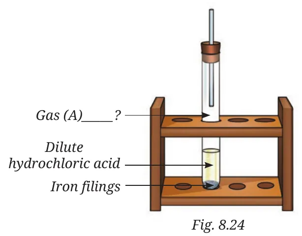
Gas A is hydrogen (colourless, odourless, burns with a pop sound).
Q11.Name any two compounds made only from non-metals and give two uses of each.
- Water (hydrogen + oxygen): drinking, cooking, washing, putting out fires, farming.
- Carbon dioxide (carbon + oxygen): fire extinguishers, fizzy (soda) drinks, used by plants for photosynthesis, dry ice for cooling.
Other correct answers: glucose / sugar (C, H, O): energy food, sweets; ammonia (N, H): fertilisers, cleaning; methane (C, H): fuel in CNG and biogas.
Q12.How can gold be classified as both a mineral and a metal?
Mineral: gold is found naturally in the Earth as a solid with a fixed composition. It occurs as a pure element, so it is a native mineral.
Metal: gold is an element with metallic properties: shiny, malleable (can be beaten into thin sheets), ductile, and a good conductor of heat and electricity.
In-text questions
P1.Can you identify a few more non-uniform mixtures and a few uniform mixtures around you? (page 117)
Non-uniform: fruit salad, soil, khichdi, muddy water, dal with stones, sand and gravel, chalk in water. Uniform: sugar syrup, salt water, lemonade (filtered), air, vinegar, soft drinks, brass and steel.
P2.Can you explain why the lime water turned milky? (Activity 8.1)
Carbon dioxide from the air reacted with calcium hydroxide (lime water) to form calcium carbonate, which does not dissolve and forms tiny white particles, making it milky.
P3.What are the tiny shining particles in a sunbeam in a dark room?
Dust particles suspended in air. They scatter sunlight, so we see them shining.
P4.Is sodium chloride separable into its elements by physical processes?
No. It is a compound; only a chemical process (passing electricity through molten salt) can give sodium and chlorine. Evaporation only separates salt from water.
P5.Where did the water droplets come from when sugar was heated?
From the sugar itself. The tube was hot, so the water could not come from air condensing. Sugar contains hydrogen and oxygen, which formed water on heating.
Discover, design and debate (project ideas)
- Comic strip: "Iron and Sulfur go to a party": as friends holding hands (mixture) they can still leave; after the heat of the dance they become "Iron Sulfide" and can't be pulled apart by Mr Magnet.
- Discoveries: phosphorus (Hennig Brand, 1669, from urine!), sodium (Humphry Davy, 1807, by electricity), penicillin (Alexander Fleming, 1928, from mould), brass and bronze (ancient India, Harappa used bronze, e.g. the Dancing Girl).
- Label hunt: a detergent pack lists mixtures of compounds like sodium carbonate and surfactants; a chips pack lists salt (sodium chloride), oil, and additives.
- Debate: Elements say "we build everything"; compounds say "water and food are us"; mixtures say "air and steel keep you alive". Conclusion: all three are needed.